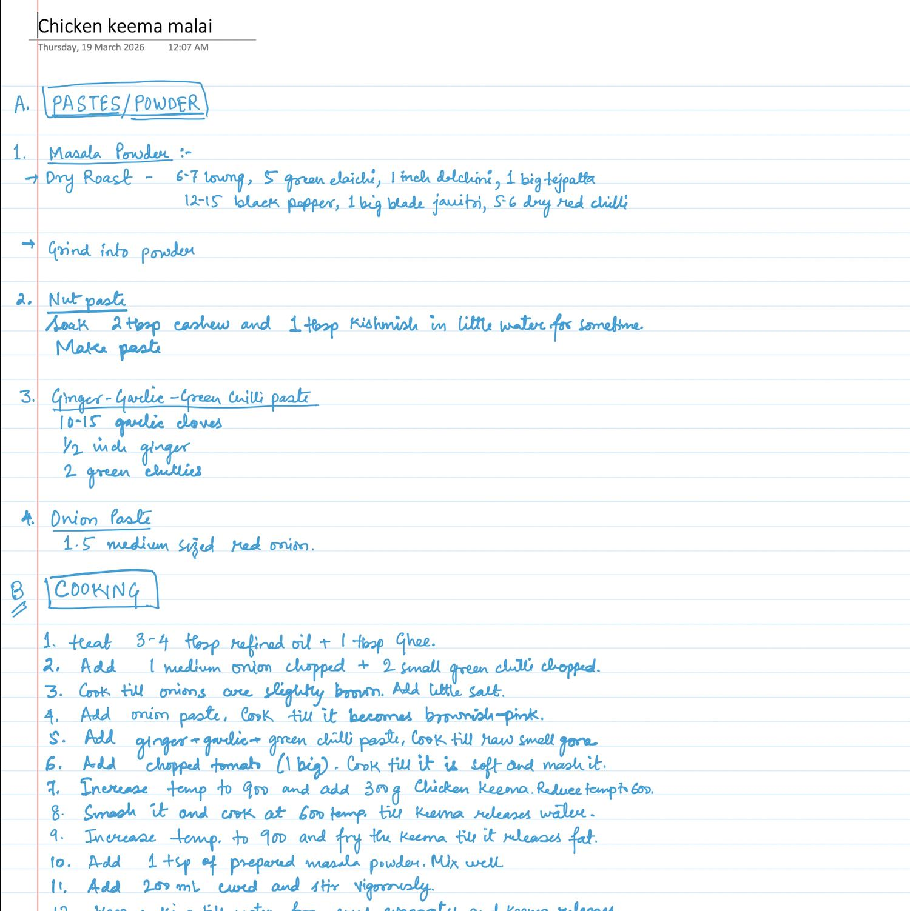
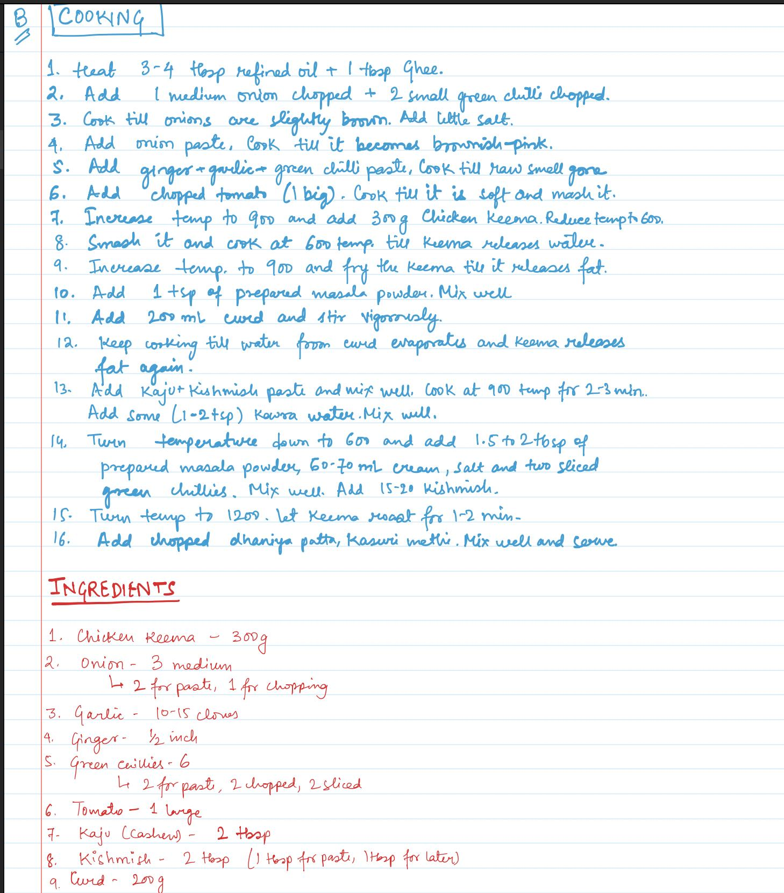
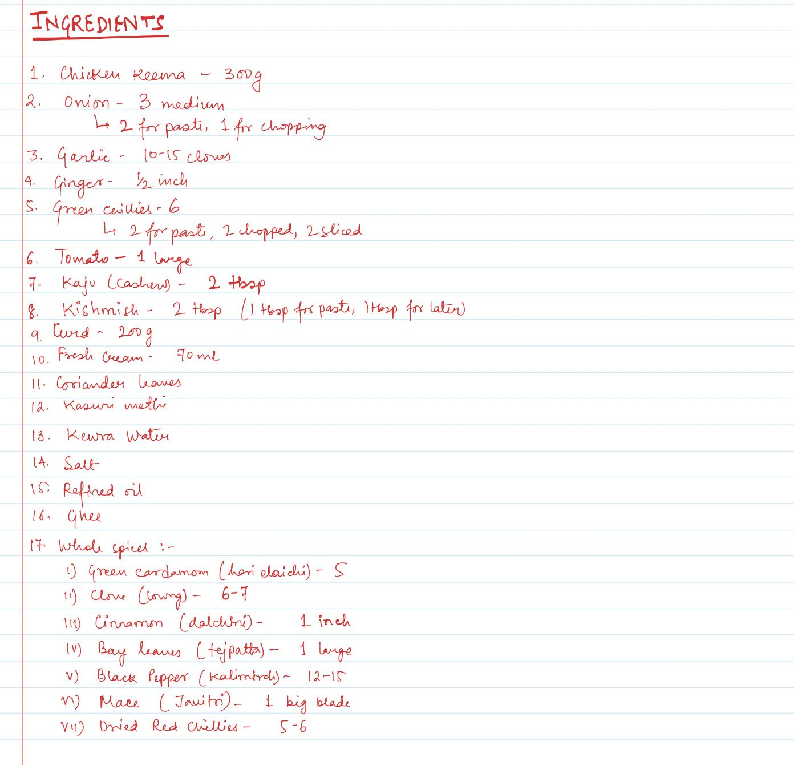

Meat / North India
Chicken Keema Malai
Spicemalai
Written19 March 2026
FromHer handwriting
Tagschicken · keema · curry · cream
A. PASTES/POWDER
- 1Masala Powder :-
- Dry Roast - 6-7 loung, 5 green elaichi, 1 inch dalchini, 1 big tejpatta, 12-15 black pepper, 1 big blade javitri, 5-6 dry red chilli
- Grind into powder
- 2Nut paste
Soak 2 tbsp cashew and 1 tbsp kishmish in little water for sometime. Make paste
- 3Ginger-Garlic-Green Chilli paste
10-15 garlic cloves 1/2 inch ginger 2 green chillies
- 4Onion Paste
1.5 medium sized red onion.
B. COOKING
- 1Heat 3-4 tbsp refined oil + 1 tbsp Ghee.
- 2Add 1 medium onion chopped + 2 small green chilli chopped.
- 3Cook till onions are slightly brown. Add little salt.
- 4Add onion paste, Cook till it becomes brownish-pink.
- 5Add ginger + garlic + green chilli paste, Cook till raw smell gone
- 6Add chopped tomato (1 big). Cook till it is soft and mash it.
- 7Increase temp to 900 and add 300g Chicken Keema. Reduce temp to 600.
- 8Smash it and cook at 600 temp. till keema releases water.
- 9Increase temp. to 900 and fry the keema till it releases fat.
- 10Add 1 tsp of prepared masala powder. Mix well
- 11Add 200 mL curd and stir vigorously.
- 12Keep cooking till water from curd evaporates and keema releases fat again.
- 13Add kaju + kishmish paste and mix well. Cook at 900 temp for 2-3 min. Add some (1-2 tsp) Kewra water. Mix well.
- 14Turn temperature down to 600 and add 1.5 to 2 tbsp of prepared masala powder, 60-70 mL cream, salt and two sliced green chillies. Mix well. Add 15-20 kishmish.
- 15Turn temp to 1200. Let keema roast for 1-2 min.
- 16Add chopped dhaniya patta, kasuri methi. Mix well and serve.
INGREDIENTS
- 1Chicken Keema - 300g
- 2Onion - 3 medium └ 2 for paste, 1 for chopping
- 3Garlic - 10-15 cloves
- 4Ginger - 1/2 inch
- 5Green chillies - 6 └ 2 for paste, 2 chopped, 2 sliced
- 6Tomato - 1 large
- 7Kaju (cashew) - 2 tbsp
- 8Kishmish - 2 tbsp (1 tbsp for paste, 1 tbsp for later)
- 9Curd - 200g
- 10Fresh Cream - 70 mL
- 11Coriander leaves
- 12Kasuri methi
- 13Kewra Water
- 14Salt
- 15Refined oil
- 16Ghee
- 17Whole spices :- i) Green cardamom (hari elaichi) - 5 ii) Clove (loung) - 6-7 iii) Cinnamon (dalchini) - 1 inch iv) Bay leaves (tejpatta) - 1 large v) Black Pepper (kalimirch) - 12-15 vi) Mace (Javitri) - 1 big blade vii) Dried Red Chillies - 5-6


